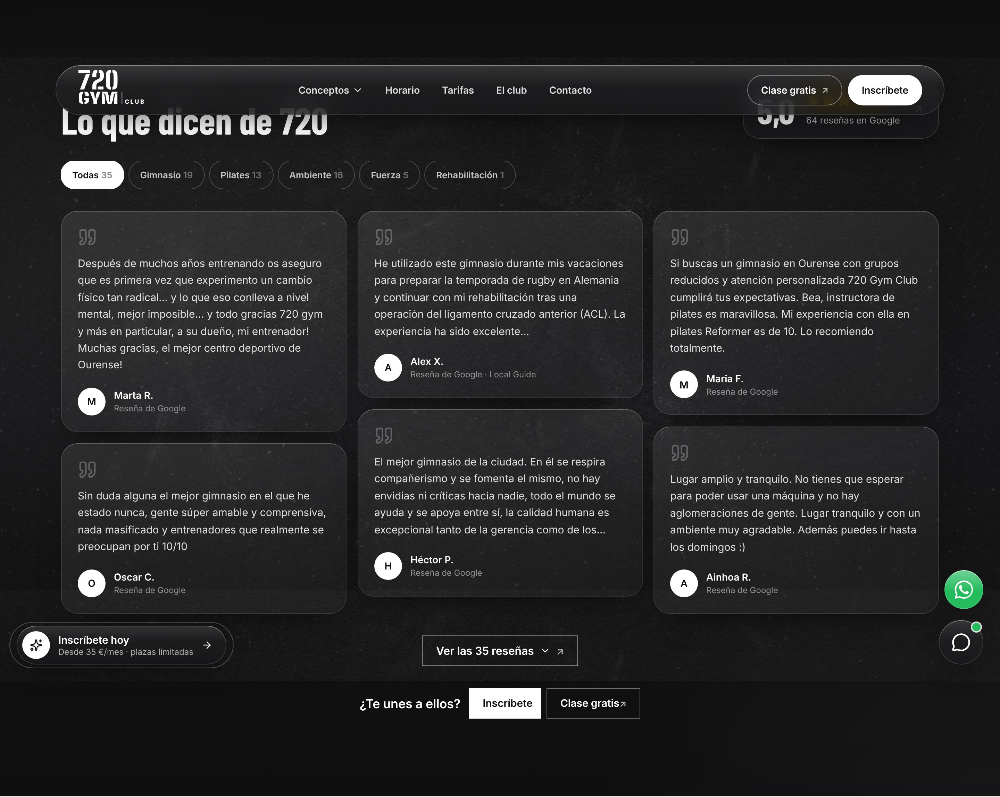

<style>
  @font-face { font-family: "Stencil720"; src: url({{recursos}}/fuentes/stencil.woff2) format("woff2"); font-weight: 100 900; }

  /* ===== Portada a sangre: la primera página no lleva márgenes, cabecera ni pie ===== */
  @page :first { margin: 0; @top-left { content: none; border: 0; } @top-right { content: none; border: 0; } @bottom-left { content: none; border: 0; } @bottom-right { content: none; border: 0; } }
  .tapa { position: relative; width: 210mm; height: 296.5mm; overflow: hidden; background: #050507; color: #fff; break-after: page; }
  .tapa .foto { position: absolute; inset: 0; width: 100%; height: 100%; object-fit: cover; object-position: 50% 40%; }
  .tapa .velo { position: absolute; inset: 0; background:
      linear-gradient(180deg, rgba(5,5,7,.55) 0%, rgba(5,5,7,.15) 22%, rgba(5,5,7,.35) 45%, rgba(5,5,7,.92) 66%, #050507 82%),
      radial-gradient(120% 60% at 100% 100%, rgba(100,71,250,.38), transparent 60%),
      radial-gradient(80% 40% at 0% 100%, rgba(54,173,251,.18), transparent 60%); }
  .tapa .contenido { position: absolute; inset: 0; padding: 16mm 17mm 14mm; display: flex; flex-direction: column; }
  .tapa .barra { display: flex; justify-content: space-between; align-items: center; }
  .tapa .barra span { font-family: "Montserrat"; font-weight: 600; font-size: 7pt; letter-spacing: .32em; text-transform: uppercase; color: rgba(255,255,255,.8); }
  .tapa .centro { margin-top: auto; }
  .tapa .etq { font-family: "Montserrat"; font-weight: 600; font-size: 9pt; letter-spacing: .42em; text-transform: uppercase; color: #fff; margin: 0 0 7mm; display: flex; align-items: center; gap: 4mm; }
  .tapa .etq::before { content: ""; width: 12mm; height: .7mm; border-radius: 1mm; background: linear-gradient(90deg, var(--azul), var(--indigo), var(--morado)); }
  .tapa .sello { display: flex; align-items: center; gap: 8mm; margin: 0 0 9mm; }
  .tapa .l720 { height: 46mm; width: 46mm; overflow: visible; }
  .tapa .por { font-family: "Montserrat"; font-weight: 200; font-size: 54pt; line-height: 1; background: linear-gradient(135deg, var(--azul), var(--indigo) 55%, var(--morado)); -webkit-background-clip: text; background-clip: text; color: transparent; }
  .tapa .nn { display: flex; flex-direction: column; align-items: flex-start; gap: 3.5mm; }
  .tapa .nn .iso { height: 24mm; }
  .tapa .nn .word { height: 9.4mm; }
  .tapa h1 { color: #fff; font-size: 23pt; line-height: 1.12; max-width: 160mm; margin: 0 0 4mm; }
  .tapa .sub { font-size: 11.2pt; line-height: 1.55; color: rgba(255,255,255,.78); max-width: 150mm; margin: 0 0 9mm; }
  .tapa .claves { display: grid; grid-template-columns: repeat(3, 1fr); gap: 3.5mm; margin: 0 0 10mm; }
  .tapa .clave { border: 1px solid rgba(255,255,255,.16); background: rgba(255,255,255,.05); border-radius: 3mm; padding: 4mm 4.5mm 3.6mm; }
  .tapa .clave b { display: block; font-family: "Montserrat"; font-weight: 800; font-size: 17pt; color: #fff; line-height: 1.05; }
  .tapa .clave span { font-family: "Montserrat"; font-weight: 600; font-size: 6.6pt; letter-spacing: .22em; text-transform: uppercase; color: rgba(255,255,255,.62); }
  .tapa .pie { display: flex; justify-content: space-between; border-top: 1px solid rgba(255,255,255,.18); padding-top: 4mm; font-family: "Montserrat"; font-weight: 600; font-size: 6.8pt; letter-spacing: .24em; text-transform: uppercase; color: rgba(255,255,255,.62); }
  .tapa .pie b { color: #fff; }

  /* ===== Cuerpo: flujo continuo, sin láminas forzadas ===== */
  .sec { margin: 0 0 7mm; }
  .sec > h2 { display: flex; align-items: baseline; gap: 3mm; margin: 0 0 1.5mm; font-size: 15pt; }
  .sec > h2 .n { font-size: 15pt; margin: 0; }
  .sec > .intro { font-size: 10.2pt; color: var(--suave); margin: 0 0 3.5mm; max-width: 150mm; }
  .sec h3 { margin: 0 0 1mm; }
  .arranque, .sec.entera { break-inside: avoid; }

  .cifras { display: grid; grid-template-columns: repeat(4, 1fr); gap: 3mm; margin: 0 0 4mm; break-inside: avoid; }
  .cifras div { background: var(--lila); border-radius: 3mm; padding: 3.6mm 4mm 3.2mm; }
  .cifras b { display: block; font-family: "Montserrat"; font-weight: 800; font-size: 16pt; color: var(--indigo); line-height: 1.05; }
  .cifras span { font-size: 8.4pt; color: var(--texto); line-height: 1.35; display: block; margin-top: 1mm; }

  .lados { display: grid; grid-template-columns: 1fr 1fr; gap: 4mm; break-inside: avoid; }
  .lado { border: 1px solid var(--linea); border-radius: 3mm; padding: 3.8mm 4.6mm 2.8mm; }
  .lado.acento { border: 1.4px solid var(--indigo); }
  .quien { font-family: "Montserrat"; font-weight: 700; font-size: 7pt; letter-spacing: .26em; text-transform: uppercase; color: var(--indigo); margin: 0 0 1.5mm; }
  .lado h3 { font-size: 11pt; text-transform: uppercase; margin: 0 0 2mm; }
  .lado ul { margin: 0; padding-left: 4.5mm; font-size: 9.2pt; line-height: 1.5; }
  .lado li { margin: 0 0 1mm; }
  .nota { font-size: 8.6pt; color: var(--suave); margin: 2.5mm 0 0; line-height: 1.45; }
  .nota b { color: var(--texto); }

  /* Fotos: dos filas con altura fija y recorte desde arriba, para que encajen sin huecos */
  .fotos { display: grid; gap: 3mm; margin: 0 0 3mm; }
  .fotos.f2 img { object-position: 50% 38%; }
  .fotos.f1 { grid-template-columns: 1fr 38mm; height: 82mm; }
  .fotos.f2 { grid-template-columns: 1.15fr 1fr 1fr; height: 44mm; }
  .fotos figure { margin: 0; position: relative; border-radius: 2.6mm; overflow: hidden; border: 1px solid var(--linea); background: #0b0b0d; }
  .fotos img { width: 100%; height: 100%; object-fit: cover; object-position: 50% 0; display: block; }
  .fotos figcaption { position: absolute; left: 2mm; bottom: 2mm; background: rgba(0,0,0,.72); color: #fff; font-family: "Montserrat"; font-weight: 600; font-size: 5.8pt; letter-spacing: .18em; text-transform: uppercase; padding: .9mm 2mm; border-radius: 1mm; }
  .mosaico { display: grid; grid-template-columns: 1fr 33mm 47mm; grid-template-rows: 1fr 1fr; gap: 2.6mm; height: 58mm; margin: 0 0 3.5mm; }
  .mosaico figure { margin: 0; position: relative; border-radius: 2.6mm; overflow: hidden; border: 1px solid var(--linea); background: #0b0b0d; }
  .mosaico img { width: 100%; height: 100%; object-fit: cover; object-position: 50% 0; display: block; }
  .mosaico .m-hero { grid-row: 1 / 3; } .mosaico .m-hero img { object-position: 50% 30%; }
  .mosaico .m-movil { grid-row: 1 / 3; }
  .mosaico .m-a img { object-position: 50% 42%; } .mosaico .m-b img { object-position: 50% 30%; }
  .mosaico figcaption { position: absolute; left: 1.8mm; bottom: 1.8mm; background: rgba(0,0,0,.72); color: #fff; font-family: "Montserrat"; font-weight: 600; font-size: 5.6pt; letter-spacing: .18em; text-transform: uppercase; padding: .8mm 1.8mm; border-radius: 1mm; }
  .valor { display: flex; justify-content: space-between; align-items: center; gap: 4mm; border-left: 1.2mm solid var(--indigo); background: var(--lila); border-radius: 0 3mm 3mm 0; padding: 3mm 5mm; margin: 0 0 4mm; font-size: 9.4pt; break-inside: avoid; }
  .valor b { font-family: "Montserrat"; }

  .grid3 { display: grid; grid-template-columns: repeat(3, 1fr); gap: 3mm; }
  .mini { border: 1px solid var(--linea); border-radius: 3mm; padding: 2.8mm 3.6mm 2.6mm; break-inside: avoid; }
  .mini .num { font-family: "Montserrat"; font-weight: 800; font-size: 7.6pt; letter-spacing: .16em; color: var(--indigo); }
  .mini h3 { font-size: 9.6pt; margin: .8mm 0 .8mm; }
  .mini p { margin: 0; font-size: 8.6pt; line-height: 1.4; }

  /* Lo que aporta 720: tres columnas con barra de color arriba */
  .etapas { display: grid; grid-template-columns: repeat(3, 1fr); gap: 3.5mm; break-inside: avoid; }
  .etapa { border: 1px solid var(--linea); border-radius: 3mm; overflow: hidden; }
  .etapa .cab { padding: 3.4mm 4mm 2.8mm; background: #0b0b0d; color: #fff; position: relative; }
  .etapa .cab::after { content: ""; position: absolute; left: 0; right: 0; bottom: 0; height: .9mm; background: linear-gradient(90deg, var(--azul), var(--indigo), var(--morado)); }
  .etapa .cab span { font-family: "Montserrat"; font-weight: 600; font-size: 6.6pt; letter-spacing: .24em; text-transform: uppercase; color: rgba(255,255,255,.62); }
  .etapa .cab b { display: block; font-family: "Montserrat"; font-weight: 800; font-size: 11pt; color: #fff; text-transform: uppercase; }
  .etapa ul { list-style: none; margin: 0; padding: 3mm 4mm 2mm; }
  .etapa li { margin: 0 0 2.6mm; font-size: 8.7pt; line-height: 1.4; }
  .etapa li b { display: block; font-family: "Montserrat"; font-size: 9pt; }
  .etapa li strong { color: var(--indigo); }

  /* Cambios: tres «tarifas» en contenido */
  .canjes { display: grid; grid-template-columns: repeat(3, 1fr); gap: 3.5mm; break-inside: avoid; }
  .canje { border: 1px solid var(--linea); border-radius: 3mm; padding: 4mm 4.4mm 3.6mm; }
  .canje.aparte { background: #fafafa; border-style: dashed; }
  .canje .tipo { font-family: "Montserrat"; font-weight: 700; font-size: 10pt; text-transform: uppercase; color: var(--negro); margin: 0 0 1mm; }
  .canje .ej { font-size: 8.6pt; color: var(--suave); line-height: 1.4; margin: 0 0 3mm; min-height: 12mm; }
  .canje .precio { font-family: "Montserrat"; font-weight: 800; font-size: 12pt; color: var(--indigo); margin: 0; line-height: 1.2; }
  .canje .precio small { display: block; font-size: 6.6pt; letter-spacing: .22em; text-transform: uppercase; color: var(--suave); font-weight: 600; margin-bottom: .6mm; }
  .linea-nota { display: grid; grid-template-columns: 1fr 1fr; gap: 4mm; margin-top: 3.5mm; font-size: 8.8pt; line-height: 1.5; break-inside: avoid; }
  .linea-nota p { margin: 0; }

  .tira-real { position: relative; display: grid; grid-template-columns: repeat(3, 1fr); gap: 2.6mm; height: 36mm; margin: 5mm 0 0; break-inside: avoid; }
  .tira-real figure { margin: 0; border-radius: 2.6mm; overflow: hidden; }
  .tira-real img { width: 100%; height: 100%; object-fit: cover; display: block; }
  .tira-real p { position: absolute; left: 2.4mm; bottom: 2.4mm; margin: 0; background: rgba(0,0,0,.74); color: #fff; font-family: "Montserrat"; font-weight: 600; font-size: 6pt; letter-spacing: .2em; text-transform: uppercase; padding: 1mm 2.2mm; border-radius: 1mm; }
  .ideas { display: grid; grid-template-columns: repeat(3, 1fr); gap: 3.5mm; }
  .idea { border-radius: 3mm; padding: 4mm 4.4mm 3.6mm; background: linear-gradient(160deg, #f6f4ff, #fff 70%); border: 1px solid #ddd7fd; display: flex; flex-direction: column; }
  .idea .num { font-family: "Montserrat"; font-weight: 800; font-size: 7pt; letter-spacing: .24em; text-transform: uppercase; color: var(--indigo); margin: 0 0 1mm; }
  .idea h3 { font-size: 10.6pt; margin: 0 0 1.5mm; }
  .idea > p:not(.num) { font-size: 8.7pt; line-height: 1.45; margin: 0 0 3mm; }
  .idea .gana { margin-top: auto; border-top: 1px dashed #cfc7fb; padding-top: 2.4mm; display: flex; flex-direction: column; gap: 1.2mm; font-size: 8pt; line-height: 1.35; color: var(--suave); }
  .firma-doc { margin: 5mm 0 0; text-align: center; font-family: "Montserrat"; font-weight: 600; font-size: 6.8pt; letter-spacing: .26em; text-transform: uppercase; color: var(--suave); }
  .condiciones { margin-top: 0; }
  .firma .fila { display: grid; grid-template-columns: 1.6fr 1fr; gap: 4mm; }
  .otros { display: grid; grid-template-columns: 34mm 1fr; margin: 3mm 0 0; font-size: 8.8pt; border-top: 1px solid var(--linea); break-inside: avoid; }
  .otros > * { padding: 1.5mm 0; border-bottom: 1px solid var(--linea); margin: 0; }
  .otros dt { font-family: "Montserrat"; font-weight: 600; color: var(--negro); }

  /* Cierre: pasos, firmas y logo juntos en la última página */
  .final { break-inside: avoid; }
  .pasos { display: grid; grid-template-columns: repeat(3, 1fr); gap: 3.5mm; position: relative; padding-top: 2mm; margin: 0 0 4mm; }
  .pasos::before { content: ""; position: absolute; left: 0; right: 0; top: 0; height: .7mm; border-radius: 1mm; background: linear-gradient(90deg, var(--azul), var(--indigo), var(--morado)); }
  .paso2 { padding-top: 2mm; }
  .paso2 .cuando { font-family: "Montserrat"; font-weight: 700; font-size: 7pt; letter-spacing: .22em; text-transform: uppercase; color: var(--indigo); margin: 0 0 .6mm; }
  .paso2 h3 { font-size: 10pt; margin: 0 0 .8mm; }
  .paso2 p { margin: 0; font-size: 8.8pt; line-height: 1.45; }
  .firmas { display: grid; grid-template-columns: 1fr 1fr; gap: 8mm; }
  .firma { border: 1px solid var(--linea); border-radius: 3mm; padding: 4mm 5mm 3mm; }
  .firma .campo { display: flex; align-items: flex-end; height: 8mm; border-bottom: 1px solid #cfcdd3; font-size: 7.6pt; color: var(--suave); padding-bottom: .8mm; }
  .firma .campo.alto { height: 10mm; }
  .cierre { margin-top: 4mm; } .cierre img.iso { height: 11mm; } .cierre img.word { height: 5mm; margin: 2mm auto 2.5mm; }
</style>

<section class="tapa">
  
  <div class="velo"></div>
  <div class="contenido">
    <div class="barra">
      
      <span>{{fecha}} · Borrador v2</span>
    </div>
    <div class="centro">
      <p class="etq">Acuerdo de colaboración</p>
      <div class="sello">
        <svg class="l720" viewBox="0 0 80 80" aria-label="720 GYM CLUB">
          <text x="0" y="35" font-family="Stencil720" font-weight="800" font-size="44" textLength="80" lengthAdjust="spacingAndGlyphs" fill="#fff">720</text>
          <text x="0.5" y="68" font-family="Stencil720" font-weight="800" font-size="40" textLength="79" lengthAdjust="spacingAndGlyphs" fill="#fff">GYM</text>
          <text x="79" y="79" text-anchor="end" font-family="Montserrat" font-weight="800" font-size="7.6" letter-spacing="1.4" fill="#fff">CLUB</text>
        </svg>
        <div class="por">×</div>
        <div class="nn">
          
          
        </div>
      </div>
      <h1>La web de 720, a cambio de contar quién la ha hecho</h1>
      <p class="sub">neuro·node entrega a 720 GYM CLUB su web pública sin coste de implantación. A cambio, 720 da a conocer el trabajo de neuro·node en sus redes y como caso de éxito.</p>
      <div class="claves">
        <div class="clave"><b>Web propia</b><span>Sin coste de implantación</span></div>
        <div class="clave"><b>6 meses</b><span>De colaboración</span></div>
        <div class="clave"><b>Contenido</b><span>En lugar de cuota mensual</span></div>
      </div>
    </div>
    <div class="pie"><span>Entre <b>720 GYM CLUB</b> y <b>neuro·node</b></span><span>Confidencial</span></div>
  </div>
</section>

<section class="sec entera">
  <h2><span class="n">01</span>La propuesta</h2>
  <p class="intro">Un intercambio sencillo: 720 estrena web propia y neuro·node gana visibilidad y un caso real que enseñar.</p>
  <div class="lados">
    <div class="lado acento">
      <p class="quien">720 recibe</p>
      <h3>Su web, publicada</h3>
      <ul>
        <li>La web pública de la demo, con sus datos reales y su dominio.</li>
        <li>Cambios a cambio de contenido, no de dinero.</li>
        <li>Fallos técnicos corregidos sin coste.</li>
      </ul>
    </div>
    <div class="lado">
      <p class="quien">neuro·node recibe</p>
      <h3>Difusión y un caso real</h3>
      <ul>
        <li>Difusión en Instagram durante 6 meses.</li>
        <li>Un desayuno con empresarios en 720.</li>
        <li>Recomendaciones, con un 10 % de comisión.</li>
        <li>La web como caso de éxito.</li>
      </ul>
    </div>
  </div>
  <p class="nota"><b>Fuera del acuerdo:</b> panel de gestión, asistente con IA, pagos y reservas online. Se pueden añadir más adelante como ampliación (apartado 05). Las condiciones económicas de este acuerdo son confidenciales.</p>
</section>

<section class="sec entera">
  <h2><span class="n">02</span>Qué recibe 720</h2>
  <p class="intro">La parte pública de la demo que ya conocéis, revisada con vuestros datos reales y lista para Google. Valor de referencia: <span class="pendiente">[700 € · plan Clientes de la propuesta]</span>.</p>
  <div class="mosaico">
    <figure class="m-hero"><figcaption>Portada · ordenador</figcaption></figure>
    <figure class="m-movil"><figcaption>Móvil</figcaption></figure>
    <figure class="m-a"><figcaption>Test «Tu plan»</figcaption></figure>
    <figure class="m-b"><figcaption>Reseñas reales</figcaption></figure>
  </div>
  <div class="grid3">
    <div class="mini"><span class="num">A</span><h3>Web completa</h3><p>Disciplinas, horario, tarifas, historia, galería y las reseñas reales de Google.</p></div>
    <div class="mini"><span class="num">B</span><h3>Captación</h3><p>Test que recomienda plan y botones de inscripción y WhatsApp en toda la web.</p></div>
    <div class="mini"><span class="num">C</span><h3>Asistente básico</h3><p>Responde horarios, precios y dudas frecuentes y deriva al WhatsApp del equipo. Sin coste de uso.</p></div>
    <div class="mini"><span class="num">D</span><h3>Móvil primero</h3><p>Pensada para quien llega desde Instagram: rápida y con contacto a un toque.</p></div>
    <div class="mini"><span class="num">E</span><h3>SEO local</h3><p>Preparada para búsquedas como «gimnasio Ourense» o «Pilates Reformer Ourense».</p></div>
    <div class="mini"><span class="num">F</span><h3>Publicación</h3><p>Dominio propio, alta en Google y enlace nuevo en la biografía de cada cuenta.</p></div>
  </div>
</section>

<section class="sec entera">
  <h2><span class="n">03</span>Qué aporta 720</h2>
  <p class="intro">Un plan de difusión en dos tiempos. <b>neuro·node graba, edita y diseña todo el material</b>: 720 solo lo publica en colaboración con <span class="pendiente">[@instagram de neuro·node]</span> y abre sus puertas.</p>
  <div class="etapas">
    <div class="etapa">
      <div class="cab"><span>Semana de publicación</span><b>Lanzamiento</b></div>
      <ul>
        <li><b>Reel «antes y después»</b>Del enlace con 15 botones a la web nueva, en 30 segundos. En colaboración: sale en los dos perfiles.</li>
        <li><b>Historias y destacada «Web»</b>Historias de estreno y una destacada fija en el perfil de 720 con mención a neuro·node.</li>
        <li><b>Cartel con QR en recepción</b>«Apúntate y reserva desde la web», con «web por neuro·node».</li>
      </ul>
    </div>
    <div class="etapa">
      <div class="cab"><span>Durante 6 meses</span><b>Continuidad</b></div>
      <ul>
        <li><b>Desayuno de empresarios en 720</b>Una mañana en el centro con contactos de Brais: neuro·node cuenta cómo una web y la IA ayudan a un negocio local. 720 pone el espacio y la invitación.</li>
        <li><b>2 reels más en colaboración</b>Mes 2: «apuntarse en 30 segundos». Mes 6: los resultados de la web, con cifras reales.</li>
        <li><b>1 historia al mes con un dato</b>Visitas, tests o altas que ha traído la web ese mes.</li>
      </ul>
    </div>
    <div class="etapa">
      <div class="cab"><span>Siempre</span><b>Permanente</b></div>
      <ul>
        <li><b>Recomendación con comisión</b>Brais recomienda neuro·node a empresarios de su entorno y cobra el <strong>10 % de cada venta</strong> que llegue a través de él.</li>
        <li><b>«Web creada por neuro·node»</b>En el pie de la web, con enlace a neuro-node.com.</li>
        <li><b>Caso de éxito</b>Capturas, logo y resultados de la web en la web, presentaciones y anuncios de neuro·node.</li>
      </ul>
    </div>
  </div>
</section>

<section class="sec entera">
  <h2><span class="n">04</span>Ideas para el lanzamiento</h2>
  <p class="intro">Acciones opcionales para multiplicar el alcance del estreno. Se eligen juntos y neuro·node prepara las piezas.</p>
  <div class="ideas">
    <div class="idea">
      <p class="num">Idea 1</p>
      <h3>Sorteo de lanzamiento</h3>
      <p>Premio: <span class="pendiente">[1 mes de cuota en 720]</span>. Para participar hay que seguir a las dos cuentas y hacer el test de la web.</p>
      <div class="gana"><span><b>720</b> gana seguidores y contactos que ya han elegido plan.</span><span><b>neuro·node</b> gana seguidores locales.</span></div>
    </div>
    <div class="idea">
      <p class="num">Idea 2</p>
      <h3>Oferta solo en la web</h3>
      <p>Durante el primer mes, quien se apunte desde la web tiene una ventaja propia: <span class="pendiente">[matrícula gratis / primera semana gratis]</span>.</p>
      <div class="gana"><span><b>720</b> llena plazas desde el primer día.</span><span><b>neuro·node</b> obtiene cifras reales de altas para el caso de éxito.</span></div>
    </div>
    <div class="idea">
      <p class="num">Idea 3</p>
      <h3>Directo Brais × Brian</h3>
      <p>Un directo de Instagram desde las dos cuentas: «De un enlace de Instagram a una web que inscribe», con la web en pantalla y preguntas en vivo.</p>
      <div class="gana"><span><b>720</b> enseña el centro y la web a su comunidad.</span><span><b>neuro·node</b> llega a dueños de negocio de Ourense.</span></div>
    </div>
  </div>
</section>

<section class="sec entera">
  <h2><span class="n">05</span>Cambios y mejoras</h2>
  <p class="intro">En lugar de una cuota mensual, cada cambio que pida 720 se compensa con contenido.</p>
  <div class="canjes">
    <div class="canje"><p class="tipo">Cambio pequeño</p><p class="ej">Horario, precio, texto, foto o un aviso temporal.</p><p class="precio"><small>A cambio de</small>1 historia con mención</p></div>
    <div class="canje"><p class="tipo">Sección nueva</p><p class="ej">Nueva disciplina, página de un club o una promoción con su página.</p><p class="precio"><small>A cambio de</small>1 reel en colaboración</p></div>
    <div class="canje aparte"><p class="tipo">Ampliación Pro</p><p class="ej">Pagos y reservas online, asistente con IA y panel de gestión. Tienen costes de funcionamiento propios.</p><p class="precio"><small>Presupuesto aparte</small><span class="pendiente">[importe]</span></p></div>
  </div>
</section>

<section class="sec entera">
  <h2 style="margin-bottom:3mm"><span class="n">06</span>Condiciones</h2>
  <dl class="otros condiciones">
    <dt>Duración</dt><dd>6 meses desde la publicación. Al terminar, se puede renovar o pasar al mantenimiento estándar.</dd>
    <dt>Dominio</dt><dd>A nombre de 720 desde el primer día.</dd>
    <dt>Alojamiento</dt><dd><span class="pendiente">[a cargo de 720 / incluido por neuro·node]</span></dd>
    <dt>Material</dt><dd>720 aporta las fotos originales con permiso de uso y confirma horarios, precios y contactos antes de publicar.</dd>
    <dt>Confidencialidad</dt><dd>Las condiciones económicas de este acuerdo no se comparten con terceros.</dd>
    <dt>Salida</dt><dd>Si a los 3 meses no se ha publicado lo acordado, la web pasa al mantenimiento estándar: <span class="pendiente">[35 € / mes]</span>.</dd>
    <dt>Facturación</dt><dd><span class="pendiente">[según indiquen las gestorías de cada parte]</span></dd>
    <dt>Textos legales</dt><dd>720 facilita los datos del titular para el aviso legal y la política de privacidad.</dd>
    <dt>Revisión</dt><dd>Cada parte puede revisar las publicaciones en las que aparece antes de que salgan.</dd>
  </dl>
</section>

<section class="sec final">
  <h2><span class="n">07</span>Próximos pasos</h2>
  <div class="pasos">
    <div class="paso2"><p class="cuando">1 · Acuerdo</p><h3>Revisión y firma</h3><p>Ajustamos lo que haga falta de este documento y lo firmamos.</p></div>
    <div class="paso2"><p class="cuando">2 · Material</p><h3>Fotos, datos y dominio</h3><p>Fotos originales, horarios y precios confirmados, y acceso al dominio.</p></div>
    <div class="paso2"><p class="cuando">3 · Lanzamiento</p><h3>Publicación y reel</h3><p>Web en línea, enlace en las biografías y reel en colaboración esa misma semana.</p></div>
  </div>
  <div class="firmas">
    <div class="firma">
      <p class="quien">Por 720 GYM CLUB</p>
      <div class="fila"><div class="campo">Nombre</div><div class="campo">Fecha</div></div>
      <div class="campo alto">Firma</div>
    </div>
    <div class="firma">
      <p class="quien">Por neuro·node</p>
      <div class="fila"><div class="campo">Nombre</div><div class="campo">Fecha</div></div>
      <div class="campo alto">Firma</div>
    </div>
  </div>
  <p class="firma-doc">Documento elaborado por neuro·node · {{fecha}}</p>
</section>
